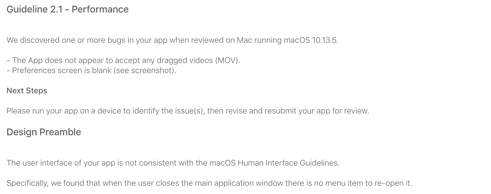
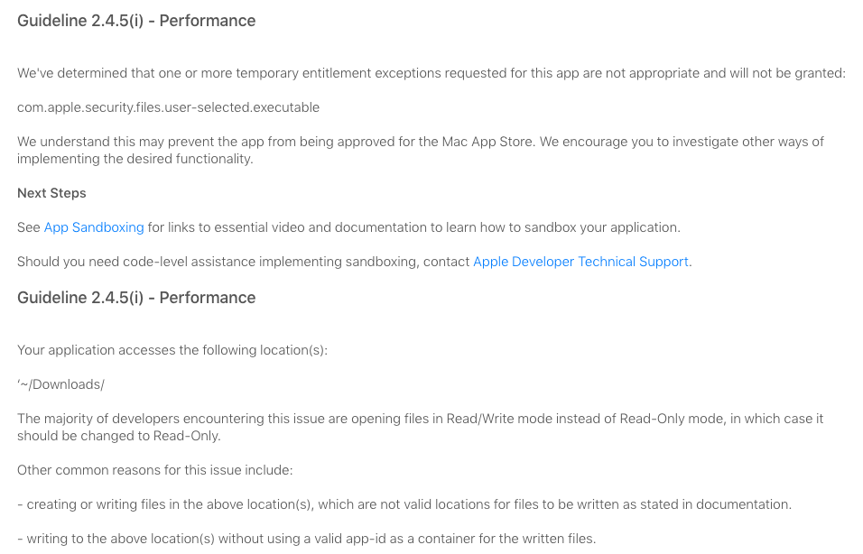
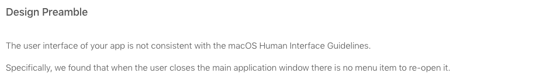
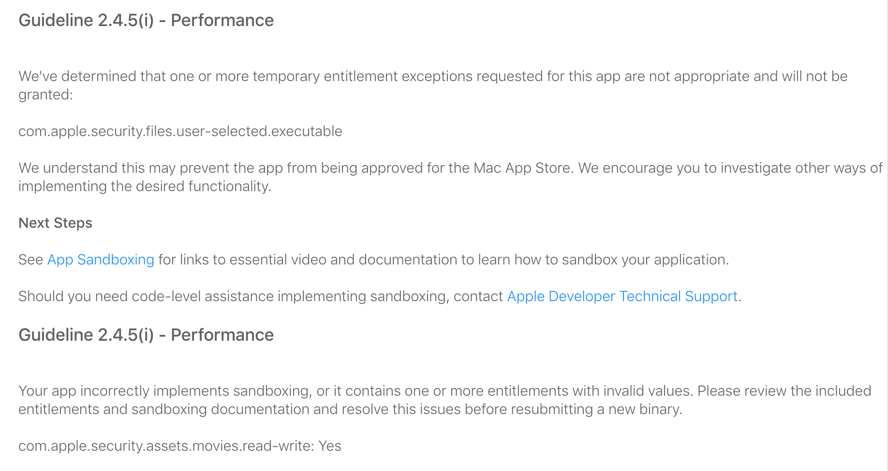
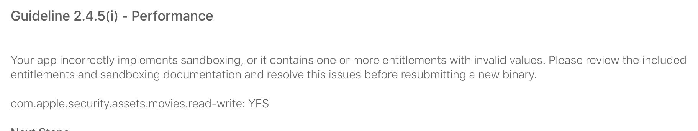
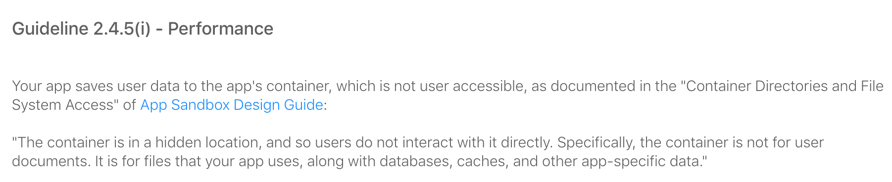

距离上次写博客过去了一个月。这一个月经历了挣扎的上架 MAS。还好我没放弃，终于在昨天上架了 MAS。
我将凭借我的记忆来叙述这个上架过程中一些对于沙盒机制的理解。以及整个上线过程中存在的坑。
第三方 executable file 的签名
上文提到，我在整个软件的压制过程中，使用的是 ffmpeg 官网的可执行文件压制。而像 Mac 上著名的 INNA 是采用的 ffmpeg 的 .h 头文件 + 部分 objective-c 代码来实现部分和 ffmpeg 相关的代码。
我承认我不是一个好的工程师，我也承认我觉得使用 ffmpeg 的 c 文件进行二次开发是更好的选择。但是如果我把我的精力放在研究 c 代码上，那这个工程量对于我来说太大，以及我觉得直接使用 ffmpeg 并不是不可以。
那么采用 ffmpeg 可执行文件作为我们的主要工具，就有一个很重要的问题，那就是 ffmpeg 的签名问题。MAS 版本的所有文件都要求进行签名，我第一次无法上传到 MAS 的问题就是 ffmpeg 没有签名。这里的签名就直接使用 codesign 签名是可以的。除此之外，对于 ffmpeg 要求有一个单独的 entitlement 文件，而这个文件里面应该填写的是
<?xml version="1.0" encoding="UTF-8"?>
<!DOCTYPE plist PUBLIC "-//Apple//DTD PLIST 1.0//EN" "http://www.apple.com/DTDs/PropertyList-1.0.dtd">
<plist version="1.0">
<dict>
<key>com.apple.security.inherit</key>
<true/>
<key>com.apple.security.app-sandbox</key>
<true/>
</dict>
</plist>
然后在签名的使用 codesign 和 entitlement 签名。
这就完成了第一步，对于第三方可执行文件的签名，如果这个地方没有签名，连上传到 MAS 都是会被阻碍的。
如何理解沙盒机制
我将用五次被拒绝的经历来说明我对沙盒机制的理解。
第 0 次被拒（构建版本不显示图标）
在我完成第一次上传之后，我的构建版本处一直不显示图标，这和之前的情况是不一样的。这个地方的坑在于可以使用构建版本，但是就是不显示图标…因为我之前经历过不显示图标的问题，最终联系了苹果客服才知道调用了私有 API，但是这次确实是一切正常，就是不显示图标。这个坑经历的时间最长，让我一直觉得是我调用了不该调用的接口。
第 1 次被拒 7月7日
提交苹果审核之后，我的第一次拒绝在 7.7 这一天出现了。
主要问题如下图。

为了可以让搜索引擎更好的搜索到相同的问题，我把文字版本的关键部分贴出来
Specifically, we found that when the user closes the main application window there is no menu item to re-open it.
第一个问题好解决，不支持 MOV 的问题，我在 drag and drop 里增加一个判断就解决了。这个 window reopen 的问题我开始着手解决。
在苹果的 Human Interface Guidelines 里是可以使用点击 Dock 图标来打开的，于是我增加了点击 Dock 图标的方法。
于此我的两个问题全部解决，重新提交审核。
第 2 次被拒 7月9日
主要问题如下图。


第一个和第二个问题的关键部分
com.apple.security.files.downloads.read-write 和 com.apple.security.files.user-selected.executable 这两个 entitlement 文件的声明。
第三个还是 re-open window 的问题。
我认为 Download 文件夹是可以随意使用的，而且我已经可以点击 Dock 打开了。于是向苹果方发了一个回执。
`
- The download folder is the default folder to save the compressed video. So I need the download folder to write permission. And I think the right folder path is
/Users/username/Downloads. - The reopening event is resolved by add
makeKeyAndOrderFrontin Appdelegate. If the user closes the window, he can reopen it by click docker icon. And I already test it. `
然后苹果给我了一个详细的回复
The Downloads folder is only appropriate for items downloaded from the Internet. Additionally, clicking the Dock icon is an insufficient means of restoring the Main Window. We advise implementing a menu item. We look forward to reviewing your revised binary.
Download 文件夹的使用权，只有当具备下载功能的时候才可以使用。而苹果认为，单个窗口的应用，点击 Dock 是一个没效率的打开操作，建议使用快捷键打开。
于是在这个地方，我把 Download 文件夹换成了 Movie 文件夹，然后参考了 CurrencyX 的方案，在 Menu 里加了一个快捷键启动窗口的方法。重新提交审核。
第 3 次被拒 7月11日
主要问题如下图。
第一个和第二个问题的关键部分。

关键字
com.apple.security.files.user-selected.executable 和 com.apple.security.assets.movies.read-write: Yes
我依然没有解决 executable 的问题，以及在苹果看来 movies 也是不可以被读写的。
我删除了 entitlement 中 com.apple.security.files.user-selected.executable。重新提交审核。
第 4 次被拒 7月11日
主要问题如下图。
第一个和第二个问题的关键部分。

关键字
com.apple.security.assets.movies.read-write: Yes
在这个地方我将 com.apple.security.assets.movies.read-write 删除，然后将压制文件的默认文件夹放在了沙盒里的 cache 文件夹。
第 5 次被拒 7月13日
主要问题如下图。
问题关键部分。

关键字
Your app saves user data to the app's container, which is not user accessible, as documented in the "Container Directories and File System Access" of App Sandbox Design Guide: "The container is in a hidden location, and so users do not interact with it directly. Specifically, the container is not for user documents. It is for files that your app uses, along with databases, caches, and other app-specific data."
于是在这个地方，我把存储位置设置为一个 NSOpenPanel，让用户选择存储位置，重新提交审核。
终于审核通过。
总结
我们来复盘整个过程。总的来说是对 MAS 的沙盒机制理解不清楚。下面我将总结及说明。
首先我们先说沙盒无关的，就是苹果认为，我们应该在 menubar 设置一个可以打开窗口的方案。或者你就直接把它关掉。
其次是沙盒问题，在 MAS 的沙盒机制中，Download 文件夹和 Movie 文件夹是不可以被随意使用的，Download 文件夹只有下载功能才可以，而如果使用了 Movie 文件，那么 iTunes 的 movie 也是可以被使用的。（第 2 次和第 3 次和第 4 次被拒绝的原因）
com.apple.security.files.user-selected.executable 这个是只有当你的应用需要创建可执行文件，这个可执行文件用于启动服务等的时候才能使用。（第 2 次和第 3 次和第 4 次被拒绝的原因）
沙盒内部的文件，只能被写，不能被用户读取。（第 5 次被拒绝的理由）
还有一个关键的问题在于，MAS 沙盒默认会获得你从 NSOpenPanel 读取的那个文件夹的权限，而 Drag 和 Recent 的是沙盒获得了操作这个文件的权限，而不是文件夹！
所以当我使用 Drag and Drop 的时候是无法写文件的，而当我使用 NSOpenPanel 时候就可以。
最后
PineconeSuppress 已经上架 MAS。地址是 PineconeSuppress。
同时开发计划将逐步开放在 trello。
如果有任何问题，欢迎留言。